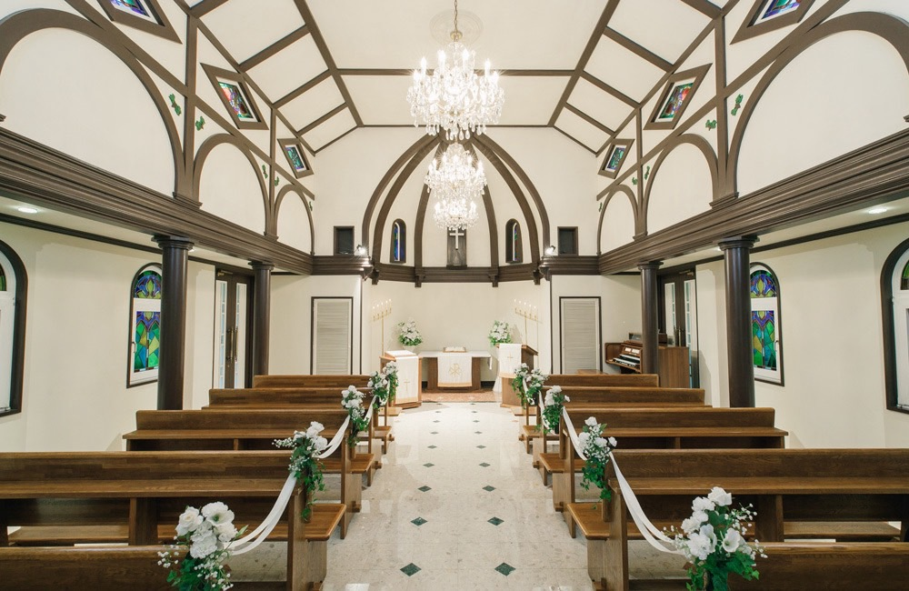

このたび私たちは、軽井沢の小さな教会で結婚式を挙げることになりました。
大勢をお招きするかたちではなく、いちばん近くにいてくれた家族だけで、 静かに一日を過ごしたいと思っています。 遠方からお越しいただくことになりますが、 高原の空気と、少しゆっくりした時間もあわせて楽しんでいただけたら嬉しいです。
当日の集合時間・会場・宿泊のご案内をまとめました。 当日はこのページを開いてご確認ください。
二〇二六年 初秋
周作 ・ ちひろ
当日のながれ
集合は 15:50、挙式は 16:00 開始です。
お式は 17:30 ごろに終わります。
-
15:00
ホテル チェックイン
チェックインは 15:00 から。この時間を目安にお越しください。
お部屋でお支度を整えていただけます。 -
15:50
チャペル前に集合
チャペルの前に直接お集まりください。ホテルの裏手、歩いてすぐです。
染谷家のご両親は、リハーサルがあるため 15:30 にお願いします。 -
16:00
挙式Ceremony
所要 約30分。
-
16:30
写真撮影・ご歓談
チャペルとその周辺で、ご家族の集合写真を撮ります。
-
17:30
挙式終了
お食事まで少し時間があります。お部屋でひと休みください。
-
18:30
お食事会
トラットリア クレアッタ にて。ホテルから車で向かいます。2時間ほどを予定しています。
-
20:30
解散・お部屋へ
そのままホテルのお部屋へお戻りください。翌朝の予定は自由行動です。
挙式会場
矢ケ崎チャペル ── 林のなかに建つ、独立したチャペルです。
images/chapel-nave.jpg
矢ケ崎チャペル
- 住所
- 〒389-0102
長野県北佐久郡軽井沢町軽井沢 1178 - ホテルから
- 裏手すぐ（徒歩1分）
ご宿泊について
全員分の客室をこちらで確保しています。
チェックインは到着後、式の前に済ませてください。
チャペルには控室がないため、お支度はお部屋でお願いします。
images/hotel.jpg
ホテルマロウド軽井沢
軽井沢駅 北口より徒歩約10分、タクシーなら約3分です。
ホテルの無料送迎もあります（9:00〜18:00／北口に着いたらホテルへお電話ください）。
- 住所
- 〒389-0102
長野県北佐久郡軽井沢町軽井沢 1178 - 電話
- 0267-42-8444
- 朝食
- 7:00 – 10:00 ／ 1階
- IN / OUT
- 15:00 / 11:00
お食事会場
式のあと、みんなで夕食を囲みます。
イタリアン「トラットリア クレアッタ」。旧軽井沢のホテルのなかにあるお店です。
images/dinner.jpg
TRATTORIA CREATTA
- 日時
- 10/16（金） 18:30 〜
- 所要
- 2時間ほど
- 住所
- 長野県北佐久郡軽井沢町軽井沢 691-1
グランディスタイル 旧軽井沢 ホテル&リゾート - 電話
- 050-5456-7908
参列するみなさま
総勢 10 名。家族だけの一日です。
新郎の家族
- 父本藤 明雄
- 母本藤 文華
- 弟本藤 寛
3 from Okayama
新婦の家族
- 父染谷 洋
- 母染谷 月子
- 姉染谷 はるひ
- 妹染谷 美月
4 from Tennodai
ご案内
気候Weather
10月中旬の軽井沢は、日中でも 15℃ 前後。朝晩は 5℃ を下回る日もあります。
東京より一枚も二枚も多いくらいの、しっかりあたたかい服装でお越しください。コートやマフラーがあっても早すぎることはありません。
まわりを歩くAround
翌朝は自由行動です。ホテルから歩ける範囲だけでも、いくつか。
雲場池 — 徒歩10分ほど。水面に木立が映る池。10月中旬は紅葉の走りの時期です。
旧軽井沢銀座 — 徒歩15分ほど。パン屋やジャム屋が並ぶ通り。
軽井沢プリンスショッピングプラザ — 駅の南口すぐ。
ハルニレテラス — 車で15分ほど。川沿いの木立のなかのお店。
所要時間はいずれも目安です。